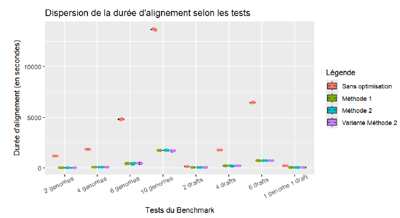
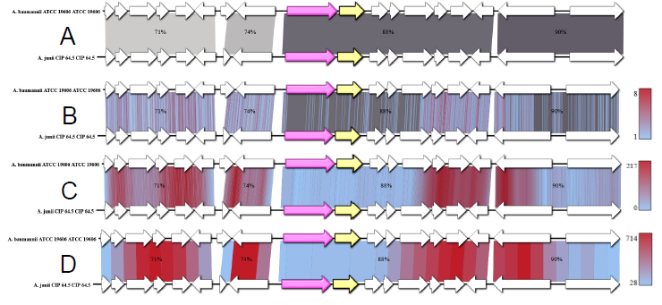
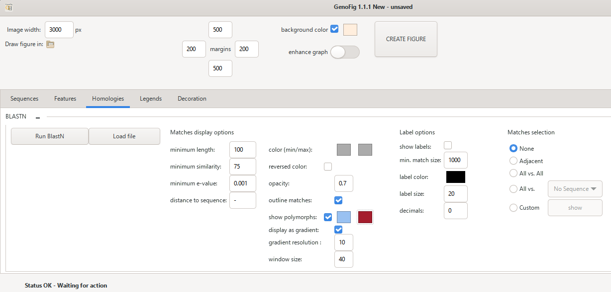

Stage de M1
Ce stage s’est déroulé au sein de l’unité PGBA dans les laboratoires de l’UMR ISP, à Tours (France).
Le logiciel Genofig est un outil de visualisation de régions génomiques bactériennes développé en Python. Il permet de comparer plusieurs séquences en générant des figures hautement personnalisables au format SVG. L’objectif de ce stage était de résoudre certaines limites qu’il rencontrait. D’abord, son utilisation avec plusieurs génomes complets provoquait des temps de traitement très longs lorsque l’on voulait calculer des homologies à cause d’un problème de gestion des alignements.
Pour corriger cela, des stratégies utilisant la parallélisation de processus ont été utilisées afin de répartir l’exécution des alignements sur plusieurs cœurs du processeur. Un autre algorithme d’alignement se nommant MMSeqs2 a également été testé pour accélérer les calculs. Pour vérifier l’efficacité de ces méthodes, un benchmark a été mis en place pour mesure les gains de temps. Au final, les résultats ont montré que la parallélisation permettait de réduire fortement les temps de traitement et que MMSeqs2 était plus rapide sur de grands jeux de données.
Une seconde limite de Genofig était que les informations fournies dans les sorties des alignements étaient insuffisantes pour mener des analyses complètes de génomique comparative. Afin d’améliorer Genofig, deux nouveaux modes de visualisation ont été intégrés, permettant l’affichage des sites polymorphes dans les régions homologues. Cela est important pour identifier des zones très conservées au sein de ces régions. Cet ajout a été rendu possible en exploitant les BTOP provenant de fichiers de sortie de BLAST. Il s’agit d’indicateurs décrivant les caractéristiques de chaque alignement, permettant de faciliter la détection des positions polymorphes.
Compétences acquises :
- Utilisation et paramétrage de différents algorithmes d’alignements de séquences nucléiques (BlastN, TBlastX, MMSeqs2)
- Développement et optimisation d’un logiciel en Python
- Mise en place de stratégie de Multi-Threading
- Analyse et création d’un benchmark
- Utilisation de Genomes Browsers
- Rédaction d’un rapport de stage
- Génération et manipulation d’images au format SVG
- Recherche bibliographique
- Approfondissement de mes connaissances en biologie fondamentale
- Interprétation des demandes et des besoins d’un commanditaire
Illustrations

Mesure du temps d’alignement (en secondes) pour chaque test du Benchmark, et chaque méthode d’exécution du BLAST

Alignement d’une sequence d’Acinetobacter baumanii contre une séquence d’Acinetobacter junii, où la flèche rose désigne une GMP synthase, et la flèche jaune un gène d’intérêt ANT(3”)-IIa [Zhang et al. 2017]. Le sens des flèches indique le sens de la transcription. (A) Affichage des régions homologues avec la version d’origine de Genofig, avec le taux d’identité en % ; (B) Affichage des positions polymorphes avec la version en barres, l’échelle indique la couleur selon le nombre de positions polymorphes ; (C) Affichage avec la version gradient, avec une taille de bloc de 2 pixels et une fenêtre de comptage à 70 pixels, l’échelle indique le nombre de positions polymorphes dans la fenêtre de comptage; (D) Affichage avec la version gradient, avec une taille de bloc à 50 pixels, et une fenêtre de comptage à 300 pixels. Le bleu indique une faible concentration de positions polymorphes, tandis que le rouge indique une forte concentration.

Interface du module homologie de Genofig, servant à générer les alignements et afficher ou non les regions homologues et positions polymorphes